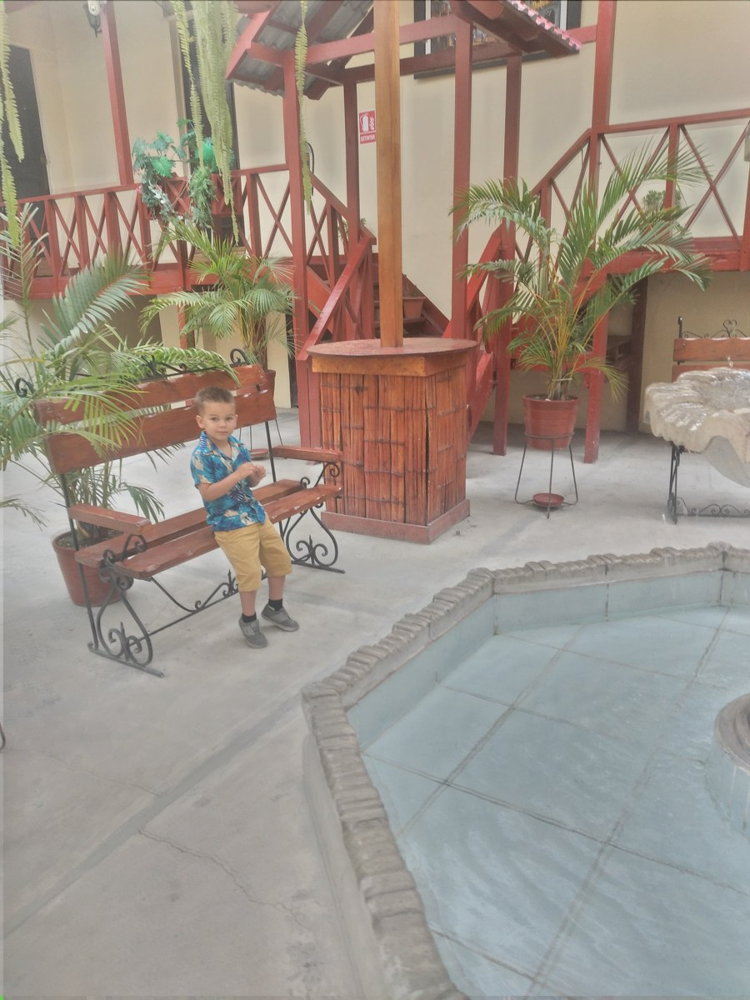

The Missing Middle Between Family Care and Institutional Care
Flexible support that shares responsibility while protecting choice and belonging.

During our time in Lima, we loved the flexibility of staying in an Airbnb. We could eat when we wanted and build our days around what worked for us. A good life is about more than appointments and care. It’s also about having the freedom to feel at home and enjoy the places around you.
The “missing middle” is the practical support that allows an adult to have a life of their own without making family members responsible for every hour or requiring the person to surrender control to a service. It can include assistance at home, planned breaks, support to participate in the community, and housing arrangements shaped around the person's wishes.
It is a way to describe a planning gap, not the name of a Paraguayan benefit or a claim that no such support exists. The question is which combinations are available, dependable, affordable, and acceptable to the adult concerned.
Families can love living together and still need help. An adult can need extensive support and still have preferences about routines, relationships, privacy, and home. Good planning makes room for both realities.
Begin with what the person wants to keep
Housing conversations often start with the next available place. Begin instead with the parts of the person's life that matter: familiar people, a neighborhood, favorite activities, a private space, or a morning routine they enjoy.
Then ask which pressures are making the present arrangement harder. Is the difficulty an uncovered afternoon? Repeated night waking? Transport? A relative's work schedule? The absence of anyone else who understands the person's communication?
Different problems call for different responses. A weekly supported outing might address isolation and create a predictable break. It will not solve a need for awake overnight assistance. Moving house may be necessary or wanted, but it should not become the automatic answer to an unrelated transport problem.
The adult's preference may also differ from the family's. Someone may want more distance, a different household, or more private time even when the family arrangement appears to work. That wish deserves a serious conversation with accessible support.
Think in combinations, not a ladder of independence
These are models to investigate, not a directory of confirmed services in Paraguay:
Assistance in the person's existing home. A trained worker can take responsibility for agreed tasks and hours. Familiar surroundings may help continuity. The arrangement still needs recruitment, payment, supervision, and backup when someone is absent. Relatives should not be quietly expected to remain on call throughout every paid shift.
Supported time outside the home. Assistance with a chosen class, workplace, shop, or recreation activity can widen ordinary life. Check whether the adult has genuine choices, whether travel is included, and whether support follows the person beyond a provider's building.
Planned respite or short stays. These can offer a change of routine and a reliable break when the adult is comfortable with the arrangement. Introductions, communication information, and clear responsibilities matter. An unfamiliar overnight placement should not be assumed suitable simply because a bed is available.
A different home with individualized support. Some adults want or need another household. Ask who controls daily routines, how roommates are chosen, what help is available overnight, and what happens if the person wants to move. A small house can still impose institutional rules.
No model is a reward for becoming more independent. The right combination depends on the person, and it may change over time.
What makes care institutional?
The UN disability-rights Committee's guidance on Article 19 emphasizes choice and control in community living. Its account of institutional arrangements includes imposed routines, lack of influence over assistance, isolation, and restrictions on everyday decisions. Size or a welcoming name does not settle the question.
A useful visit therefore goes beyond checking a tidy bedroom. Ask whether someone can choose when to get up, spend time privately, maintain relationships, decline an activity, or raise a concern without losing support. Ask how people who need substantial communication assistance exercise those choices.
Support needs do not remove these rights. Equally, describing a service as “independent living” does not establish that it has enough trained staff. Families should examine rights and actual assistance together.
Try the smallest useful change safely
A gradual trial can help people learn what works before making a larger commitment. It is not appropriate for every situation, and urgent health or safety needs require suitable professional help.
Consider a hypothetical family whose adult relative enjoys a local garden but only goes when one parent is free. A first trial might involve a trusted support person joining the usual visit, then gradually taking responsibility for agreed parts of it. The adult's willingness, communication, comfort, and preferences would guide the pace.
Before the trial, write down:
- What the adult wants from the activity and how they can ask to stop or change it.
- What the support person will do, including personal care if relevant.
- Who is responsible for transport and the return home.
- What information must be shared, and with whose permission.
- Who will respond if the plan changes or a health concern arises.
- When everyone will review what happened, including the adult's experience.
A short successful trial does not establish that the same worker or setting can provide overnight or continuous support. Expand only after the next level of responsibility has been discussed and assessed.
Make the hidden work visible
An arrangement can look affordable because nobody counts coordination, travel, missed work, or the relative who covers every cancellation. Write those tasks down. Include them when comparing options.
Ask providers for a clear explanation of included hours, exclusions, additional charges, cancellation arrangements, and emergency coverage. Ask what happens if the worker leaves. A low price is of limited use if the arrangement depends on unpaid help that the family cannot sustain.
There are trade-offs. More providers may offer flexibility but create extra coordination. One provider may simplify communication while making the person more dependent on that organisation. Living with others may offer companionship, yet introduce sensory or privacy conflicts. Discuss these openly rather than looking for a model with no disadvantages.
What You Can Do This Week
- Ask the adult what they would like more of, and what they do not want to lose.
- Name one uncovered period or responsibility in the current week.
- Write a one-paragraph description of the assistance needed during that period.
- Investigate one possible source of help, checking capacity rather than relying on a label.
- Arrange a review conversation before making a larger commitment.
For more detail, read Why Casa de SAM Is Building Homes, Not an Institution, our comparison of group homes and residential communities, and the overview of lifelong support options in Paraguay. Read model names as starting points for questions, not assurances about how a particular service works.
A standard for future services, including ours
Casa de SAM is a proposed lifelong residential community in Paraguay, currently in the planning and organisational stage, with an opening goal of 2035. It is not yet a registered nonprofit and is not accepting donations. No current placement or respite service is being offered through this article.
Any future service, including Casa de SAM, needs to demonstrate how adults will exercise choice, receive dependable help, and remain connected to life beyond the service. A good intention is the beginning of that work. Families should be able to examine the practical arrangements before relying on them.
Information reviewed November 10, 2026. The models here are general planning options, not verified local availability or individual legal or clinical advice. Seek qualified local guidance about rights, support needs, and any proposed agreement.